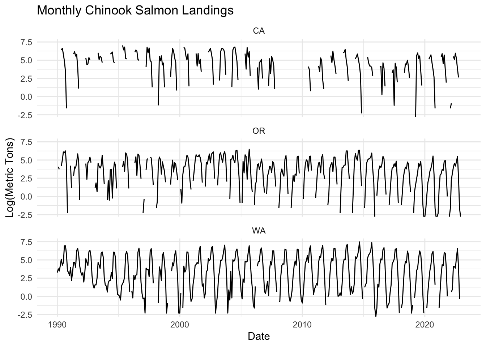
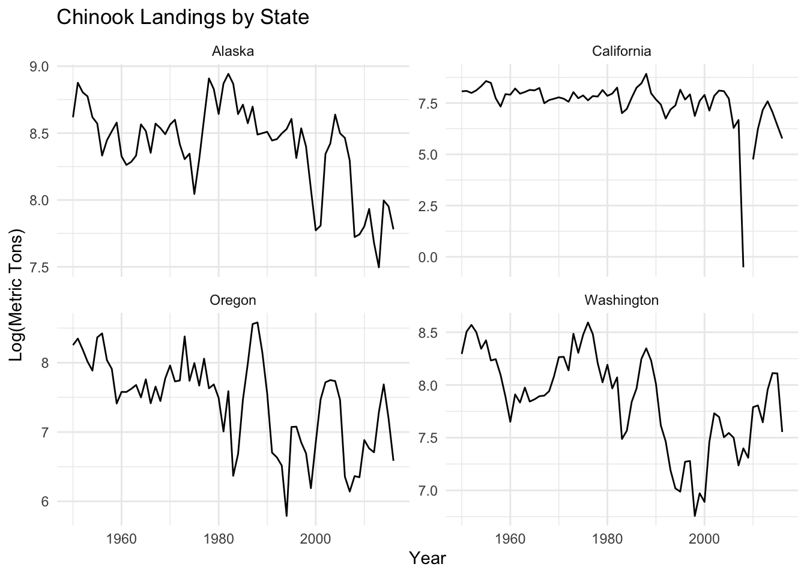
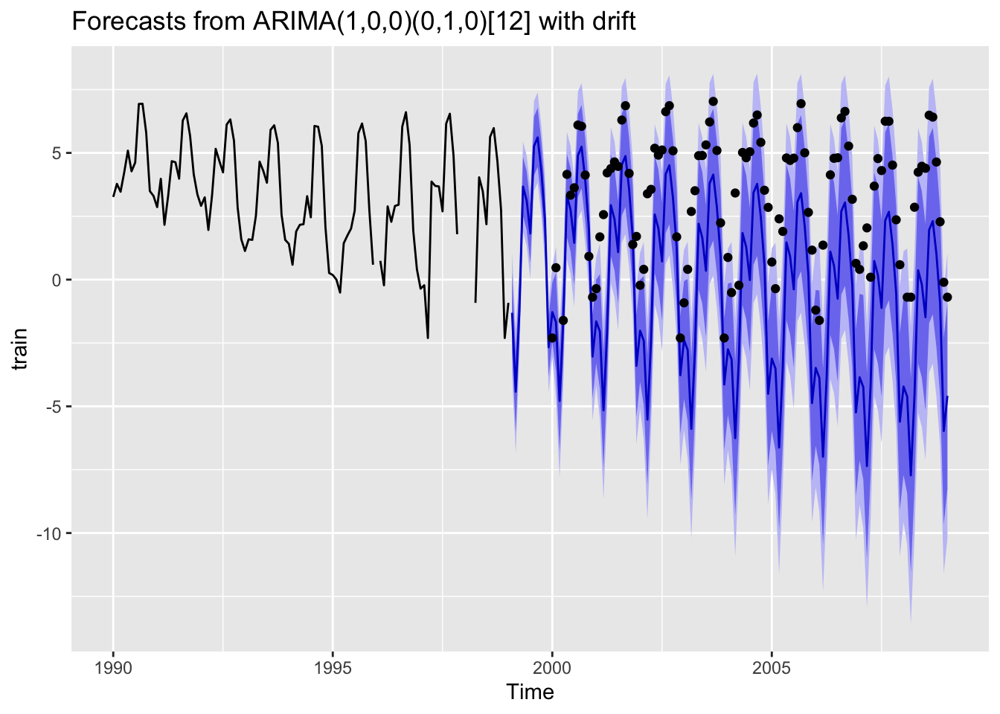

Code
# if you need to install
# install.packages('atsalibrary', repos = c('https://atsa-es.r-universe.dev', 'https://cloud.r-project.org'))
library(atsalibrary)For this lab you will use the material you have learned on ARMA and ETS models to explore features of time series of commercial landings of Chinook salmon in WA, CA, and OR. Then you will use these models to create forecasts and ask a research or forecasting question with those forecasts.
You will find this Rmd file in the Fish550-2025 repository. Clone the repository and then make sure you can Knit the Lab1-ARIMA-2025.Rmd file on your computer. Install any packages that it complains about.
Holmes, E. E., M. D. Scheuerell, and E. J. Ward. Applied Time Series Analysis for Fisheries and Environmental data. Box-Jenkins Method chapter and time series chapter.
Holmes, E. E. (2020) Fisheries Catch Forecasting https://fish-forecast.github.io/Fish-Forecast-Bookdown
Hyndman, R.J., & Athanasopoulos, G. (2018) Forecasting: principles and practice, 2nd edition, OTexts: Melbourne, Australia. https://otexts.com/fpp2/.
Last year’s team write-ups Fish550-2023
Plus the lecture material on the ATSA website.
“Compare the accuracy of forecasts using ARIMA models versus best fit ETS models. Are some types better than others for forecast accuracy?”
“Compare the accuracy of forecasts trained on log landings versus total landings.”
“Do the accuracy of forecasts change over time?”
“Look at the autoregressive structure of for the 3 states. Are there differences by region (WA vs OR vs CA)?”
“Compare the forecasts using 5, 10, 15, and 20 years of training data. Does forecast accuracy increase with more training data?”
“Compare the forecasts using monthly versus yearly data. Are forecasts better using one or the other?”
“There is something off with the California yearly data. How would you deal with that?”
“Using monthly data, are forecasts for some months better than others?”
“How does forecast accuracy change the farther out you try to forecast?”
“Create 1-year forecasts using all the data (for your state or all if you want). Is forecast error correlated with the PDO or other ocean indices?”
The dataset has commercial landings data for WA, OR and CA. There is a monthly and a yearly dataset.
Load the data. The data is in the atsalibrary R package.
# if you need to install
# install.packages('atsalibrary', repos = c('https://atsa-es.r-universe.dev', 'https://cloud.r-project.org'))
library(atsalibrary)The monthly data is chinook.month and has 3 states WA, OR, CA.

Monthly data summed across states.
library(dplyr)
library(lubridate)
chinook.month.wc <- chinook.month %>%
group_by(Year, Month) %>%
summarise(
metric.tons = sum(metric.tons, na.rm = TRUE),
.groups = "drop"
) %>%
mutate(
Date = as.Date(paste(Year, Month, "01", sep = "-"), format = "%Y-%b-%d"),
log.metric.tons = log(metric.tons)
) %>%
arrange(Date)The yearly data is chinook.year and has 6 states Alaska, California, Oregon, Washington, Michigan, Pennsylvania.
library(dplyr)
library(ggplot2)
chinook.year.filtered <- chinook.year %>%
filter(!State %in% c("Michigan", "Pennsylvania"))
ggplot(chinook.year.filtered, aes(x = Year, y = log.metric.tons)) +
geom_line() +
facet_wrap(~ State, ncol = 2, scales = "free_y") +
labs(
title = "Chinook Landings by State",
x = "Year",
y = "Log(Metric Tons)"
) +
theme_minimal()
Get one time series and split into train and test. Each with 10 years.
library(dplyr)
# Create a month number from the abbreviated month name
dat <- chinook.month %>%
filter(State == "WA") %>%
mutate(
lnreturns = log.metric.tons,
year = Year,
month = match(Month, month.abb) # Convert "Jan", "Feb", ... to 1, 2, ...
) %>%
select(year, month, lnreturns)
# Create the time series object with monthly frequency
datts <- ts(dat$lnreturns, start = c(dat$year[1], dat$month[1]), frequency = 12)
# Create 10-year train and test windows
train <- window(datts, start = c(dat$year[1], dat$month[1]), end = c(dat$year[1]+9, dat$month[1]))
test <- window(datts, start = c(dat$year[1]+10, dat$month[1]), end = c(dat$year[1]+19, dat$month[1]))train Jan Feb Mar Apr May Jun
1990 3.2619353 3.7773481 3.4688560 4.2341065 5.0894465 4.2752763
1991 2.8622009 3.9759363 2.1633230 3.2958369 4.6737630 4.6308379
1992 2.9123507 3.2464910 1.9600948 3.3214324 5.1607780 4.6821312
1993 1.1314021 1.5892352 1.5686159 2.5257286 4.6539604 4.2959239
1994 1.4109870 0.5877867 1.9021075 2.1633230 2.1860513 3.2921263
1995 0.1823216 0.0000000 -0.5108256 1.4350845 1.7404662 2.0149030
1996 NA 0.7419373 -0.2231436 2.8903718 2.2823824 2.9069011
1997 -0.3566749 -0.2231436 -2.3025851 3.8691155 3.6988298 3.6763007
1998 NA NA NA -0.9162907 4.0360090 3.4843123
1999 -0.9162907
Jul Aug Sep Oct Nov Dec
1990 4.6210435 6.9321552 6.9397383 5.8051350 3.4934727 3.3032170
1991 3.9834130 6.2783338 6.5603232 5.6726357 4.1541846 3.3603754
1992 4.2326562 6.1180972 6.3205884 5.4773000 2.8449094 1.5892352
1993 3.8242841 5.9110676 6.0901780 5.3927180 2.5649494 1.5686159
1994 2.4595888 6.0633200 6.0330862 5.2765829 2.0668628 0.2623643
1995 2.7278528 5.7791991 6.1595181 5.4676381 2.7343675 0.5877867
1996 2.9549103 6.0388251 6.6062447 5.3151745 1.9315214 0.4054651
1997 2.6946272 6.1540085 6.5453497 4.9000761 1.7917595 NA
1998 2.1860513 5.6333600 5.9781260 4.6718938 2.7472709 -2.3025851
1999 Fit a model with auto.arima() in the forecast package.
library(forecast)
mod <- auto.arima(train)
modSeries: train
ARIMA(1,0,0)(0,1,0)[12] with drift
Coefficients:
ar1 drift
0.3204 -0.0306
s.e. 0.1162 0.0106
sigma^2 = 0.7391: log likelihood = -116.82
AIC=239.64 AICc=239.9 BIC=247.36Plot a 10-year forecast against the test data.
library(zoo)
fr <- forecast(mod, h=10*12)
autoplot(fr) + geom_point(aes(x=x, y=y), data=fortify(test))
dat <- chinook.year %>%
filter(State == "Washington") %>%
mutate(lnreturns = log.metric.tons,
year = Year) %>%
select(year, lnreturns)
datts <- ts(dat$lnreturns, start=dat$year[1])
train <- window(datts, dat$year[1], dat$year[1]+9)
test <- window(datts, dat$year[1]+10, dat$year[1]+10+9)trainTime Series:
Start = 1950
End = 1959
Frequency = 1
[1] 8.294300 8.506678 8.569786 8.500596 8.343839 8.423366 8.232334 8.244702
[9] 8.094958 7.889459